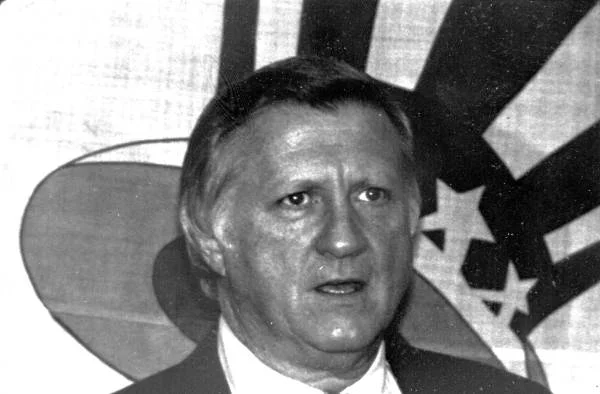

George Steinbrenner "The Boss"
Career Highlights & Facts
(The Boss)
- Born on the Fourth of July, this legendary figure bought the Yankees in 1973 for $10 million and restored the franchise to glory, winning 7 World Series titles.
- Known as "The Boss," he was famous for his hands-on management style, fiery personality, and frequently hiring and firing manager Billy Martin.
- Beyond baseball, he was a vice president of the United States Olympic Committee and owned interests in teams across basketball (Bulls, Pipers) and hockey (Devils).
7
WS Titles
11
A.L. Pennants
.566
Win Percentage
Sports Ownership & Organizational Timeline
1960-1962: Cleveland Pipers (ABL)
1972-1985: Chicago Bulls (Partner)
1973-2010: New York Yankees (Principal Owner)
1985-2002: US Olympic Committee (VP)
1999-2004: New Jersey Nets (YankeeNets Partner)
2000-2004: New Jersey Devils (YankeeNets Partner)